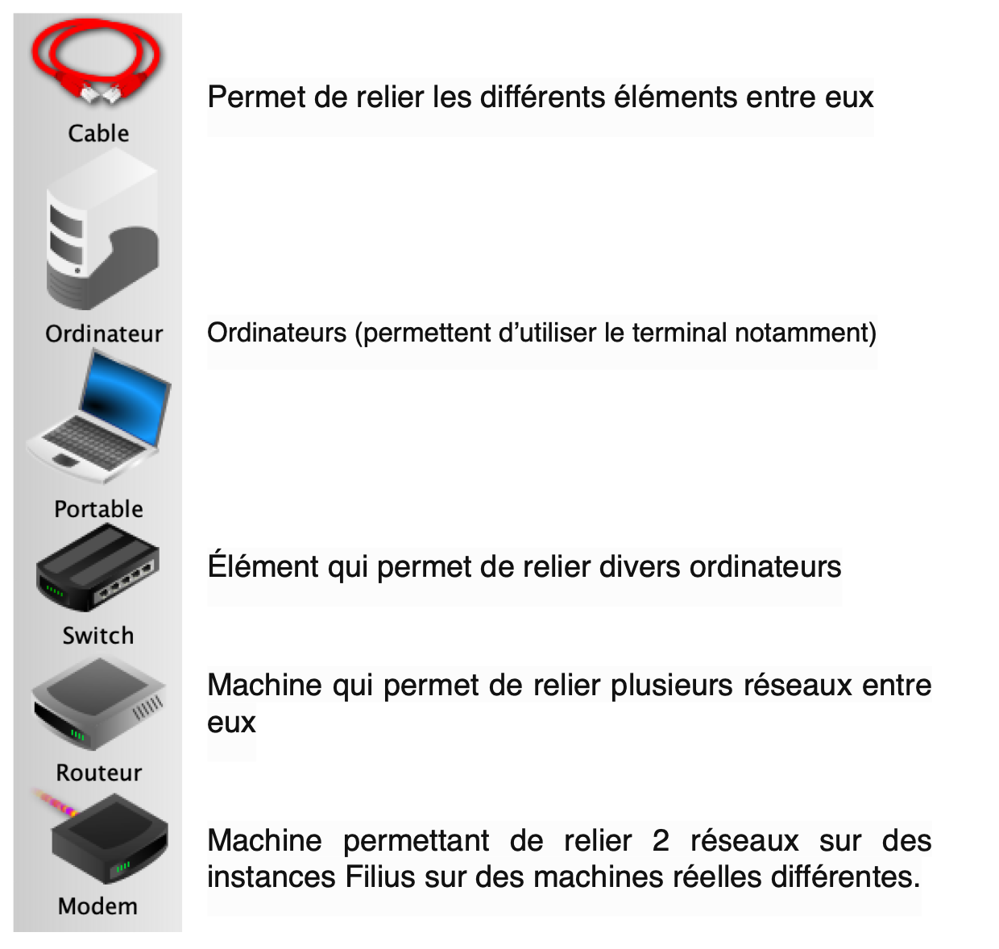
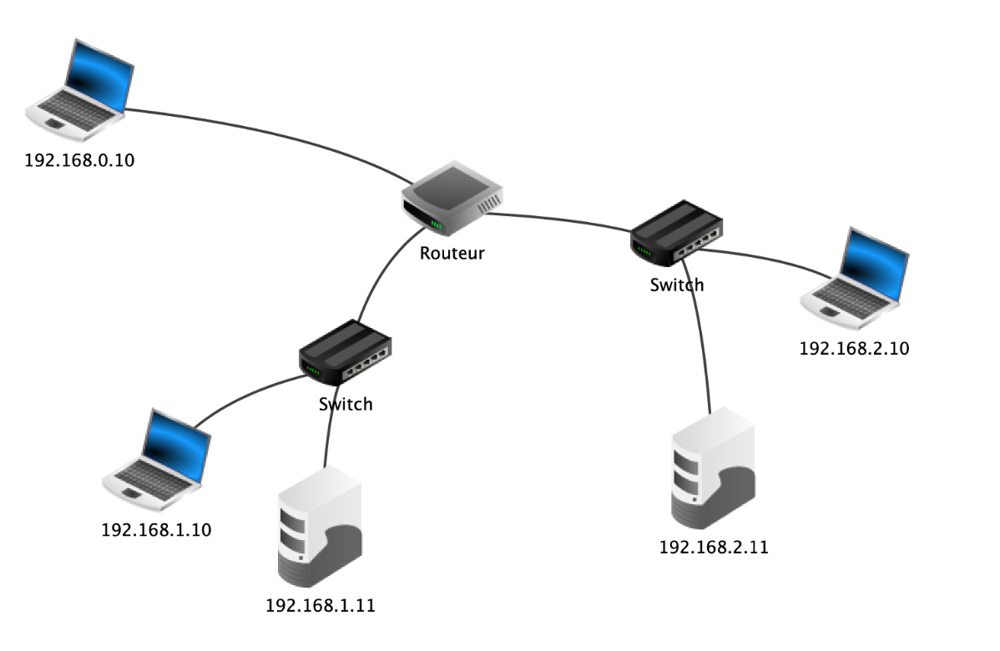

Activité : Simulation d'un réseau
Internet - Sciences Numériques et Technologie
Activité : Simulation d'un réseau
Pour mieux comprendre la construction de réseaux et d'envoi de paquets, on peut utiliser le logiciel Filius. Ce logiciel permet de créer des réseaux, des sous-réseaux et de simuler le comportement dans ceux-ci.
Approche du logiciel

Le logiciel Filius possède 3 modes:

- ✏️ : Annotation : Permet d'annoter le schéma
- 🔨 : Construction : Permet de rajouter des éléments sur le schéma
- ➡️ : Lecture : Permet d'utiliser la simulation pour étudier les échanges de données
Construction d'un réseau

- Quels sont les éléments de ce réseau?
- À quoi sert le routeur?
- Dans quels réseaux sont les ordinateurs 1 et 2 ? (Indication : pour les 2 réseaux, la partie réseau est définie sur 3 octets).
Un réseau plus étoffé
Après avoir compris comment fonctionne Filius, on va étoffer le réseau précédent.

- À quelle propriété du routeur faut-il veiller pour réaliser ce schéma ?
- Réaliser le schéma ci-dessus.